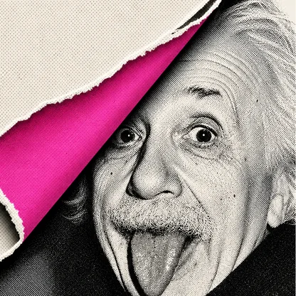
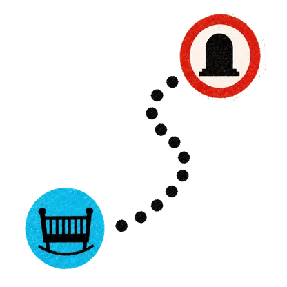
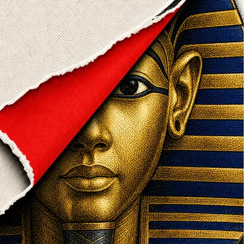
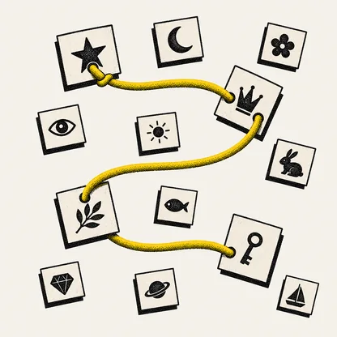
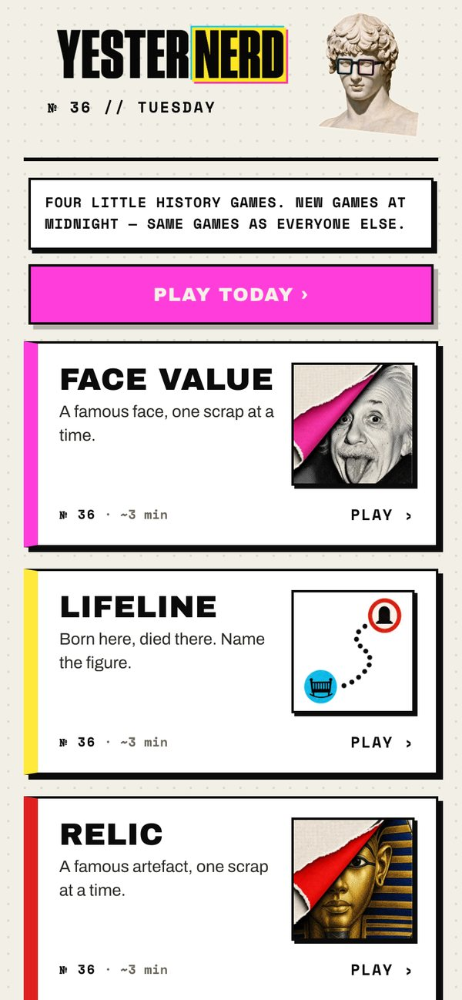

Face Value
Guess a face from a torn photo.

Meet Yesternerd.


Guess a face from a torn photo.

Born here, died there. Name the figure.

Guess an artefact from a torn photo.

Group 16 clues into four hidden categories.

Why I made it
A genuinely interesting fact or image every time. No padding.

Four little history games. Every day.
yesternerd.app
Guess a face from a torn photo.
Born here, died there. Name the figure.
Guess an artefact from a torn photo.
Group 16 clues into four hidden categories.
Why I made it
A genuinely interesting fact or image every time. No padding.
Four daily history games